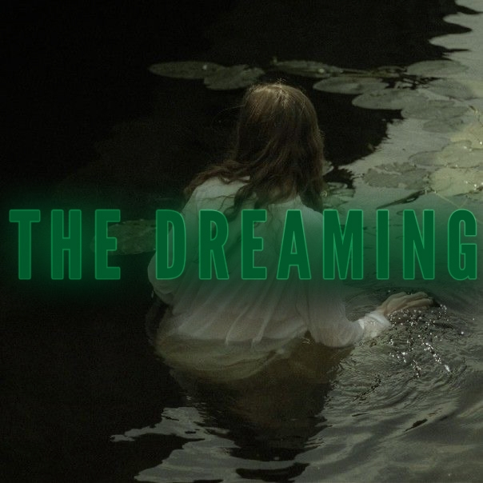
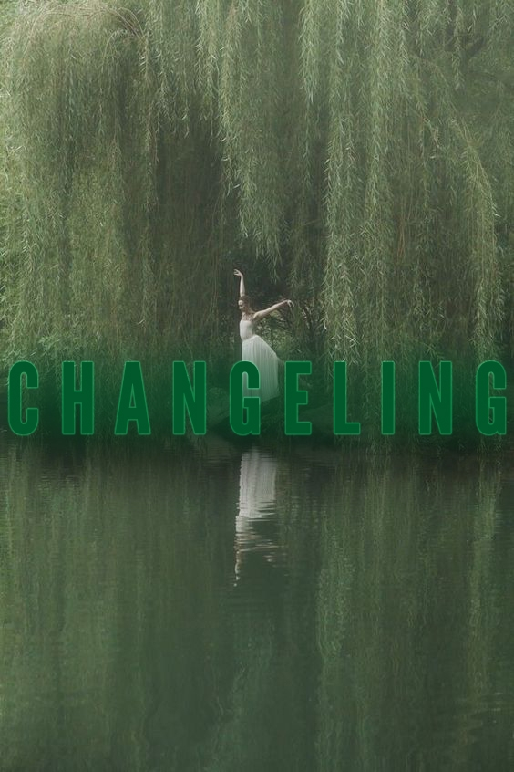
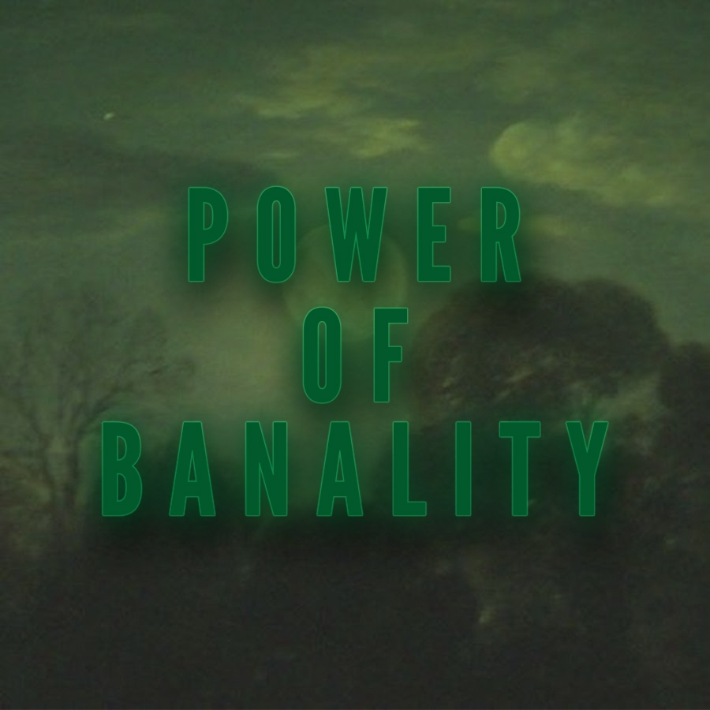
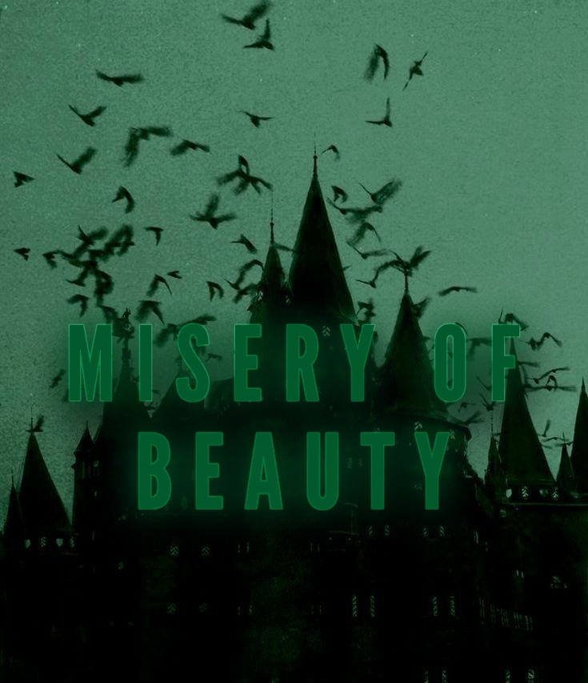
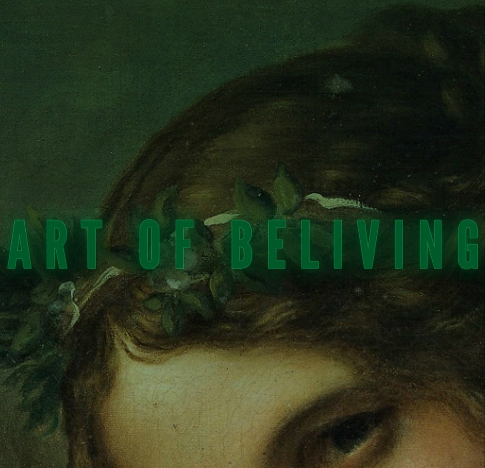

Homo Novus. Феи.
Оглавление:

«Изгои»
Мы сами избрали свой конец. Мы сами лишили себя родины, предпочитая драться за копии того, чего не существует. Невинность, мечтания, красота, детская непосредственность — всё это сгинуло в водовороте жертвенного взросления мира, который более не рад своим творцам.
Врата в Королевство Фей закрылись и теперь мы пленены судьбой смотреть, как всё сущее поворачивается к нам спиной. Человечество отвернулось от магии, избрав себе новую мечту — стерильный и грубый мир, в котором нет места загадкам и чудесам, ибо всех интересуют ответы, но не сладострастная погоня за ними. Но в поиске этой утопии, большая часть человечества утратила какую-то частичку себя. Люди забыли, что такое мечты…
Банальность и ужас скукоты стали настолько обширными, что физический мир рисковал заразить ею родину Фей — Магну.
Магна — родина Истинных Фей и один из потусторонних миров, который находится в Бездне и чьи воплощения Феи приносят в мир людей. Магна лишена такого явления, как возраст и считается, что она существует вечно, ибо соткан этот мир из нитей таких таинств, как Судьба и Время, которые Феи привнесли в настоящий мир и начали ход мировой истории.
Двери на Родину Фей захлопнулись с ужасным скрипом, оставаясь последним воспоминанием о родине тех, кто решил не дать шанс физическому миру.
Когда последние порталы на Магну закрылись, а связь между мирами прервалась, немногочисленные представители Фей все же остались жить среди людей. Эти одинокие несчастливцы были вынуждены адаптироваться к новому способу жизни для того, чтобы пережить грубую мощь коллективного неверия человечества во все магические явления. Чтобы не превратиться в невидимую и бестелесную субстанцию, пораженную банальностью, они сами стали смертными, объединив свои хрупкие, магические души с человеческой плотью. Но даже связав свои бессмертные души со смертными оболочками, эти феи продолжали грезить о том дне, когда человечество снова вернется к мистическим тайнам, к загадкам окружающего мира, к вере в чудеса, которые происходят сами собой! Когда-то Феи лелеяли грезы смертных, удобряли их рвениями, дарили вдохновения великим художникам и оберегали их разум от банальности. Теперь же эти самые умы смертных торчат стилетами в спинах Фей, которые ещё не отвернулись от своих творений.
Чему же будет посвящен твой игровой опыт, братец? Я отвечу — тебе будет уготована незавидная судьба. Ты будешь гнаться за утраченной невинностью, узнаешь о цинизме зрелости и о том, как оживают фантазии, которые существуют бок о бок с нашей реальностью — местом восторга, загадок и невообразимых опасностей.
Это сказка, но не та, в которой Вам уготован хороший или плохой конец. Это не прямой путь рассказа от первой и до последней страницы. Эта та сказка, в которой Вы поймёте, каково быть изгнанным со своей родины, терпеть муки из-за своей истиной природы и не иметь возможности выразить ту красоту, которая живёт в Вашей душе. Сила слов, мощь магии и мучительная судьба быть одним в толпе чужаков. Ваши плечи либо сломаются, либо смогут сдюжить принятие того факта, что Вы — безвольная игрушка Судьбы, по капризу насылающая на Вас преграды и муки банальности, уничтожая все воспоминания о том, что Вы узнали или испытали.
Добро пожаловать в твоё собственное Королевство без имени, друг! Место невообразимых чудес и ужасающих кошмаров.
Раса Фей: «Подменыши»

Полупрозрачные крылышки, украшенные витиеватым орнаментом из золотистых нитей, серебристых узоров, чёрных линий, складывающихся в картины. Когда они взмахивают крыльями, их края ласкают воздух и звук этих взмахов есмь настоящая музыка. Их полёт сопровождается тем, что Феи оставляют за собой еле видный след пыльцы, или вслед за ними летят сверчки и цикады, перебирая струны воздуха подобно лютне.
Непередаваемая красота их бледных и золотистых лиц, хрупкость тел с бессмертными душами внутри, которые сотрясают грубый физический мир. Они растили фантазию, лелеяли мечты, заботились о тех воздушных замках, которые строили люди внутри своей души.
Они забавлялись, перекидывая людские понятия о красоте, навязывали им самые разные видения прекрасного, но всегда с великой усладой смотрели на смертных, изучающих ту красоту, которую подарили им Феи.
Хрупкие, добрые, бескорыстные и ласковые — это ведь Феи, правда?
Нет.
Красота — понятие субъективное и монополия на красоту у Фей даёт им только то, что каждая Фея может извратить, исказить и изуродовать как людской мир, так и людские души по своему капризу. Ровно как Феи ответственны за то, что земной мир обрел красоту и получил удобоваримую форму, ровно так они ответственны за появление уродства смертных, как телесного, так и душевного. Забавы ради самые жестокие феи в один момент настолько преисполнились в своих понятиях о прекрасном, что заставили свой родной мир расходиться по швам, из-за чего фантазии этих фей пришлось сливать в людской мир, как нечистоты в канализацию. Так и появилось явление насилия и садизма в мире людей.
Лишая свой родной мир изъянов, Феи вольны стирать и конструировать свой ум, убирая из своего разума те аспекты, которые их не устраивают. К несчастью, им приходиться сливать эти поврежденные и искаженные фрагменты в мир людей, из-за чего в один момент и зародилось уродство.
Но насколько бы разными ни были эти крайности понятий о прекрасном и ужасном, всё это обеспечивается Гламуром.
Гламур — центральная и неотъемлемая часть души всех Фей, которую иногда называют «Второй Душой». Именно сила Гламура позволяет Фее колдовать, очаровывать, физически воплощать и разносить свои понятия о красоте как в физическом, так и в своём родном мире.
В мире «Кровавого Тропа» Гламур представляется «маной» Вашего персонажа-феи, позволяя колдовать, создавать, воплощать, внушать, но главное — Гламур это единственное, что удерживает Вашего персонажа от того, чтобы сгинуть в скуке и унынии современного мира.
Гламур не восстанавливается сам собой со временем, а для его сбора нужно находить редкие места, где он сохранился. Неразложившиеся трупы Фей, остатки воплощений истинной красоты или, на крайний случай, Феи-Берсерки практикуют поедание трупов «сказочных» существ типа вампиров, оборотней или магов для кражи Гламура.
Только благодаря этой энергии Феи могли приходить в мир людей под разными обличиями, в конце-концов, запоминаясь своими образами в людском фольклоре. Драконы, эльфы, гномы, злые приведения в мрачных поместьях, бородатые чародеи-мудрецы и ведьмы в остроконечных шляпах — все эти образы стоят за Феями, которые существовали в людском мире. Вера в эти легенды и истории подпитывала Гламур физического мира, позволяя Феям в древние времена запоминаться людям под самыми разными обличиями и более того, битвы между Феями в настоящем мире так же находили отклик в людских мифах и легендах. Самые простые примеры — Давид и Голиаф, которые на самом деле были Феями, пришедшими в разных обличиях и чей конфликт дошёл до того, что Давид победил Голиафа с помощью пращи.
Все формы Феи были сотканы из Гламура и редко кто позволял себе вселяться в человека, вымещая его смертную душу прочь. Каким бы забавным ни был человеческий рассудок, как смешно бы не загоралась его искра, своим сосудом из плоти и костей люди порочны, неказисты и банальны по мнению Фей, каждая из которых имеет своё представление о красоте. В прошлом был вымерший термин, обозначающий тех, кто увлекался подменой смертной души на бессмертную душу Феи в теле человека: Подменыши.
Подменыши — люди, чьи тела похитили Феи. Раньше подобное существование считалось вульгарным и позорным для Феи даже если это простая шутка, но в современные ночи, когда порталы в Магну закрыты на ставни, это единственный способ потерянной Феи существовать и не сгинуть в коллективном неверии всего человечества.
Похитить тело и сместить душу смертного из его сосуда — та цена, которую платят Подменыши чтобы хотя бы попытаться найти место в мире, который их отвергает. Это единственный способ существовать в этом мире, но даже он невыносимо болезненный и отвратительный для Феи, которая до этого могла воплощать самые невероятные формы и обличья, когда психическое поле банальности было не столь сильным.
Оказавшись в теле смертного, Фея забирает его воспоминания, повадки и некоторую часть личности бывшего владельца. Ныне, в этом обличье Подменыши ведут двойную жизнь, оказавшись на грани яви и фантазии. Застыв между реальностью и сном, Вы уже никогда не будете ни истинной Феей, ни истинным смертным, но на Вас лежит бремя обеих рас. Дряхлый сосуд из плоти и костей, который стремительно гниёт за жалкий век вмещает в себя бессмертный разум Феи, который может насчитывать сотни и тысячи лет людской жизни. Из-за этого Подменыши должны найти баланс между убийственным бытием Феи и банальным миром человечества, не имея шанса полностью принять одно и отвергнуть другое, ибо в ином случае Вы просто не останетесь собой.
Подобное существование никак нельзя назвать легким. Смертные дела кажутся эфемерными и тривиальными, ведь каждое такое действие сопровождается уколом воспоминаний о Золотом Дворе.
Золотой Двор — альтернативное название Магны.
Укутываясь в полиэстер, он пытает смертную плоть Подменыша воспоминаниями о том, как он ходил в одеяниях из лунного света. Каждый раз проглатывая шипящий комок газировки, лицо кривится и морщится от отвращения, ведь как Подменыш мог променять вино, сделанное из горных туманов на ЭТО?
Всё дело в отсутствии выбора. Пожинай плоды и пожирай прах от сапога, братец, ведь чего-то ещё ты себе позволить не можешь. Магическое «Я» Феи является бессмертным и вечным, но смертное тело и ум становятся всё старше и старше по мере того, как Подменыш проживает намеченный его сосудом век.
Рано или поздно каждого Подменыша настигает один из двух в равной степени ужасающих исходов: разум погружается в туман Банальности из-за утраты последних связей с Гламуром и Грезой или человеческий разум умрёт вместе с сущностью Подменыша из-за невыносимой для людского рассудка Красоты и силы Гламура, после чего смертный разум сметает хаос Бедлама.
Банальность и Бедлам.

Очень непросто жить, балансируя на канате двух крайностей. Одна склоняет тебя к тому, к чему бы ты никогда не притронулся, но теперь эта омерзительная хворь скуки и банальной рутины поддерживает твоё порочное, но единственное возможное существование. Чем сильнее ты погрязаешь в засасывающей рутине, тем более далёкой от тебя становится Магна, тем непостижимей для тебя становится Красота в твоей душе и тем дальше становишься сам ты, забывая то, кто ты есть. Связав смертный разум с бессмертной душой ты добровольно отдался в руки Банальности.
Вторая крайность тебя постоянно дразнит, смеётся над тобой и над тем, как твоя душонка становится всё ничтожнее и меньше с каждым днём. Красота, которую ты хочешь выразить, экстаз, в который стремишься погрузиться маячат перед глазами, но стоит тебе попытаться притронуться к ним, как твоя клетка из плоти и костей начинает содрогаться, мышцы отделяются от костей, а разум от мозга, погружаясь в безумие, став очередным беззвучным эхом, что растворится в пустоте. Это самое худшее чувство, что ты испытывал в своей жизни. Это то, что ты, будучи Феей, считал основой своего существование. Это истинная красота, которую ты не можешь выразить. Это — Бедлам.
Банальность и Бедлам — два потенциальных конца, к которому ты можешь привести своего персонажа-фею, если не сможешь нащупать баланс и вести своё существование на костяке смертного. Оба этих состояния многогранны и имеют множество нюансов. Банальность — не тривиальная скука и тоска Феи по своему дому, а Бедлам — не только всплеск вдохновения и маниакальное желание Феи достигнуть недостигаемого по меркам людского.
Банальность
Банальностью называют ничем не прикрытое неверие в магию и именно оно ответственно за то, что истинные Феи отвернулись от мира людей, сжигая все возможные мосты, соединяющие удивительный мир Магны и грубый мир человечества.
Это неверие в то, что люди не могут увидеть или услышать, неверие в магию, чудо, монстров и фей. Неверие в сверхъестественное. Банальность ограждает разум от всего, что может противоречить заложенным ранее представлениям об окружающем мире. Бессмысленная систематизация, убивающая любую индивидуальность и отрицающая всё, что существует за пределами объяснимого и очевидного. Изначально Банальность трактовалась феями, как редкое явление для тех несчастных, которые хотели оградиться от необъяснимых ужасов. Позже Банальность стала опухолью, которая уничтожает фантазию и красоту, постепенно притупляя страх и заменяя его на скептицизм.
Верования и мечты человечества создавали причудливые узоры, их попытки объяснить образы, насылаемые феями в их мир порождали сказания, легенды, мифы и мечты, таким образом подпитывая Грезу.
Греза — слой коллективной души мира людей, в котором всё взаимосвязано со всем, где любая эмоция, мечта, реакция или метафизическое явление обретают форму с помощью Фей, использующие перечисленное как материалы для своих образов и вдохновение для развития своих предпочтений в красоте и этими же вещами они украшают мир людей. Связывая людские эмоции и порывы, Феи создают мечты.
Теперь же люди куют своё неверие, разрушая магию и отрывая Грезу от своего мира, превращая банальность в смертоносную силу, которая продолжает отравлять Подменыша. Банальность может уничтожить не сознание Подменыша, а его осознание своей магической души, заставляя превратиться в обычного, скучного человека. Не в последнюю очередь эта сила уничтожает и живые и неживые химеры, созданные Подменышами.
Химера или Химерические предметы — это любые предметы или даже существа, которые сотканы из нитей Гламура. Используя Гламур, Подменыш способен на то, чтобы выковать или создать практически любой предмет, соответствующий его понятию о красоте. Меч, чей клинок отлит из криков агонии павших воинов, арбалет, который стреляет болтами из людских снов, коробочка, из которой доносится крик разрушающейся от зависти души и доспех, сделанный из чешуи золотого дракона. При встрече с переизбытком банальности, все эти предметы могут быть разрушены.
У банальности есть и другой эффект, который зовётся Туманами. Когда в Грезу стала проникать банальность, уничтожая её изнутри, в физическом мире это уничтожение пришло в виде психической энергии, которая стала уничтожать любые воплощения магии и Гламур, так важный для воплощений магии Фей в людском мире. Феи опасались появления Туманов в Магне, из-за чего и поспешно закрыли все двери, оставляя в мире людей даже тех Фей, которые не грезили о существовании в качестве Подменыша.
Туманы стали обозначать собой закрывающиеся занавесы между миром людей и миром Фей. Этот туманный, невидимый щит может появиться где угодно и когда угодно, даже нависнуть над головой Подменыша, заставляя его забыть о Магне и о своей магии, в результате чего его прежняя жизнь в качестве Феи забывается и уходит в забвение. Туманы так же скрывают появление Гламура от глаз смертных, уничтожая все воспоминания о сверхъестественных событиях, свидетелями которых они становились. Таким образом, человек, который воочию застал магию Феи вскоре будет считать это событие сном или глупой, неосознанной фантазией, а затем и вовсе об этом забудет. Это же не даёт Подменышам раскрыть собственное существование перед людьми.
Бедлам
Запретный плод, вкушение которого может обернуться кончиной такой же катастрофической, как и охватывающие шею щупальца Банальности. Единственное, ради чего ты жил теперь не просто чуждо тебе, а враждебно. Золотые лучи, из которых ты вяжешь себе одежду обжигают твою плоть, а стоит тебе посмотреть в зеркальце, где ты видишь свою родину, как в лицо тебе ударяет невообразимо отвратительный белоснежный луч, словно тебе выкалывают глаза вилами из фотонов.
Это не твоя бессмертная душа гниёт под прессом Банальности, а просто твоё смертное тело не может сдюжить ту красоту, которую ты выражал, будучи Феей.
Это — Бедлам. Им зовут особый психический недуг или доступный только Подменышам подтип безумия, когда те слишком отрываются от мира людей созерцая чудеса и образы Грезы, при этом, будучи заточенными в смертных оболочках. Пытаясь оторваться от оков банальности, Подменыш рискует потерять всякую связь с миром смертных, ибо банальность — есмь основа его связи с тем, единственным миром где ему есть место, но который не хочет его принимать. Держа уровень Гламура на своём пике, Подменыш может без проблем видеть очертания магии недалеко от себя, на кончиках пальцев чувствуя её покалывание или слыша её зов. Но стоит ему подойти поближе, как исток Гламура внутри Подменыша начинает бушевать в нём сродни бегущей реке. Темп его разума одновременно ускоряется и несётся галопом, либо запутывается в узелки и останавливается, разрывая дух и плоть, заставляя Подменыша схватить приступ безумия, сопровождающийся Эхом.
Эхо — когда Подменыш сдаётся своему безумию и позволяет красоте уничтожить свою сущность, его лицо охватывают болезненные судороги, заставляя выпускать собственный дух в неостановимом потоке магии, а как этот поток подействует на окружающую реальность — зависит от нрава Подменыша. Дух через несколько мгновений сгинет в Банальности, а сосуд замертво падёт наземь с ужасающей миной «безмолвного эха», из-за чего процесс смерти от Бедлама и называется Эхом.
Но и это не единственная беда Бедлама. Теряющие рассудок Феи могут заражать других Подменышей своим безумием. Эхо безумия заразительно и те, кто стоят рядом с обезумевшим Подменышем, должны убить его быстрее, чем его хаотичные потоки магии охватят других и заставят также сходить с ума. Чем ближе Подменыш к источнику безумия, тем губительнее будет итог встречи с ним. Он может сгинуть в коллективном приступе безумия, который начался с одного неаккуратного Подменыша. Или же над его головой нависнут тучи Туманов, которые выжгут весь Гламур изнутри, и обезумевший Подменыш будет опустошен, обречен переживать шок от выгорания Гламура вечно. Остальные случаи, которые исключают летально-ментального исхода могут приносить Подменышам крайне неприятные ощущения сродни с сердечным приступом, который развивается в обратном порядке, или его мысли будут спутаны с мыслями тех Подменышей, которые разносят свою магию Эхом Бедлама.
Магна: «Родина, которой нет»

Жизнь Подменыша не лишена злой иронии, и одно из её проявлений заключается в мире, где он обрёл свою настоящую жизнь в виде истинной Феи. Этим миром зовётся Магна — отчий край Фей, который более тебе не рад. Магна одновременно поражает и пугает до дрожи. Земля вечных радостей, льющихся дождями, и, непереносимых страхов, скатывающиеся лавиной с вершин отчаяния в мир людей. Эта земля полна дремучих лесов, туманистых болот, пещер, которые ограждены забором из обглоданных костей и пустоши, терзающие плоть путешественников встречными ветрами из криков мук и отчаяния.
Несмотря на то, что Магна представляет из себя наполовину психическое, наполовину физическое воплощение фантазий и грёз Фей, где ментальные конструкты обретают материальную и осязаемую форму, её можно систематизировать и разделить на 3 участка, каждый из которых был воплощён из морального облика Фей Трёх Орденов.
Три Ордена — территориально-политическое деление бескрайней территории Магны на Фей трёх разных традиций красоты и грёз. Деление появилось довольно давно и до объединения Магна представляла из себя плавильный котёл, где каждое мнение Фей по вопросам красот и изяществ сотрясало материю, заставляя мир расходиться по швам.
В момент образования насилия и садизма, которые образовались путём слива в мир смертных особо порочных и опасных фантазий Фей, Магна претерпела региональное разделение, чтобы с меньшей силой дёргать за швы этого мира.
После этого мир Фей разделился на три составляющие, каждая из которых по своему вдыхает жизнь в Грезу и украшает мир людей, но с самого же начала между ними существует очень шаткое перемирие, готовое нарушиться тогда, когда влияние на Грезу одного ордена пересилит влияние другого. Каждый орден представляет не просто большинство представлений о красоте и фантазиях, но и определяет философию каждой Феи внутри него.
Орден Лоялистов
«Моя красота безбрежна!» — Симлас из ордена Лоялистов и рода Дабаиров.
Орден Лоялистов считает себя традиционалистами в истинном смысле этого слова и истоком первозданной красоты, служителями которой были все Феи до рождения Уродства будущим Орденом Берсерков.
Эти дети Грезы считают себя миротворцами, хранителями полной романтизма любви, защитниками слабых и воплощениями идеалов рыцарства. Чаще всего они выглядят традиционно, и, часто консервативно, предпочитая испытанное и проверенное годами, рискованному и необычному.
Большая часть Лоялистов одержима идеей воссоединить мир людей и Фей, считая то время, когда Феи могли свободно являться в обликах эльфов, драконов и грифонов в мир людей — золотыми веками для эти двух миров. Даже после того, как остатки Лоялистов на Земле были обречены впасть в бесчестье Подменыша, они до сих пор влачат веру в то, что смогут научить людей вновь мечтать, а мир Гламура искоренит Банальность как таковую.
Честь — такая же основа их существование, как и Гламур, из которого они состоят. Для них предательство, нечестность, нарушение клятвы и трусость сравнимы с самыми тяжелыми преступлениями. Ко всему этому они предпочитают литературно классические атрибуты рыцарства и его грации: истина, красота, справедливость, чистота помыслов и благородие умыслов. Из-за этого глаза Фей-Лоялистов устремлены в большинстве своём в прошлое, а формирование их мыслей и образов внутри зависит от бардов и хранителей сказаний, которые разносят их подвиги по всей Магне, заставляя ценить этих глашатаев своей славы и уважать их. Некоторые Феи настолько дурманены прошлым и одержимы этим средневековьем, что с головой и мечтами уходят в те времена, одеваясь и говоря в манерах тех золотых веков.
Орден Берсерков
«Зло — это когда дух и природа пересекаются в неправильном месте.» — Ванадайн из ордена Берсерков и рода Маглассов.
Если Лоялисты посвящают свои жизни охранению традиций Фей и считают, что для их сохранности нужно действовать согласно традициям Красоты и её распространению, то Берсерки считаются осквернителями этих традиций. Они действуют из соображений, что ничто не должно стоять на месте. Из-за этого каждое изменение, которое они учиняют — импульсивное и жесткое, оттого из-за них и появилось больше всех безобразных крайностей по типу упомянутого уже уродства и насилия. Ходят даже слухи, что орден Берсерков ответственен за рождение зависти и явления убийства, благодаря чему мы знаем историю о Авеле и Каине.
Берсерки обладают репутацией разжигателей войн и безумия, презирающих всех, кто слабее их, и ставящих вседозволенность и необузданность выше любого рыцарского кодекса. Берсерки имеют взгляд на свои решения и вклад в Грезу как жесткий, но необходимый для будущих благих перемен. Они — свободные провидцы, которые не считаются с традициями и приносят жизненно важные изменения и преображения с помощью любых методов, включая насилие.
Среди Берсерков доминирует мнение, что Греза отвернулся от Фей, а люди от Грезы, из-за чего эти Феи ни капли не считают обязанным хранить верность перед Грезой, и Подменыши, которые оказались заперты в мире людей и вовсе не отдают уважения ни Грезе, ни Магне. Если Лоялисты плетут нити Красоты и пользуются Грезой для украшательства мира людей, то Берсерки видят в Грезе, Гламуре и Красоте только средства, благодаря которым смогут получить власть, силу и утолить свои политические амбиции в холодной войне Фей. Берсерки были созданы для того, чтобы быть хозяевами Грезы, но не её слугами, а всё что само не идёт к ним в руки — они забирают и подчиняют самостоятельно. Тоже самое можно сказать и про то, что им противится или проявляют враждебность — они овладевают этим. Такое же отношение у них не только к Грезе, но и к самой Банальности. Великий и безликий враг, стремящийся их уничтожить, но для Берсерков это только очередной вызов, которого они не боятся, хоть и считаются с силой Банальности, способной на нечто худшее, чем уничтожение подменыша — удаление его магического «Я». Некоторые радикальные Феи-Берсерки и вовсе специально остались по ту сторону Магны, чтобы понять силу Туманов и Банальности, дабы знать как с ними работать после получения их сил. Они являются сторонниками довольно маргинального мнения о том, что Банальность воплощает в себе будущее, будучи истинным синтезом реальности, противостоящим иллюзорной хрупкости Грезы. Эти ультрарадикальные и самоуверенные Феи считают, что смогут обернуть своё убогое положение Подменыша на руку и подчинить Банальность, а по возвращению в Магну подчинить себе Грезу и покончить со сложившейся системой Трёх Орденов.
Люди для Фей-Берсерков представляются не более, чем источником Гламура. Довольно часто можно услышать истории о том, что очередной Берсерк извёл художника или писателя до эмоционального выгорания, нервного срыва или суицида, заставляя его порождать Гламур и образы для Грезы. Жертвами для Берсерков становились такие известные писатели, как Эдвард Алан По и Лавкрафт и оба встретили довольно страшную кончину. Эти Феи глубоко убеждены, что они должны править людьми и презирают Лоялистов, что те побоялись обхватить всё человечество в средневековье, лучшее для узурпирования время за всё существовании связей Фей и мира смертных. Ныне эта цель не является ценной или досягаемой хотя бы для одной Феи из-за образования Туманов и Банальности, которые делают мир людей для Фей уродливым и некомфортным.
Пока глаза Лоялистов пожинают образы прошлого, которые они никогда не воплотят, Берсерки предпочитают смотреть в неопределенное будущее. Косность и вера традициям только приближало разрушительную Банальность, которая и разрушила любую надежду на то, чтобы Феи остались в мире людей. Берсерки мнят себя чемпионами свободы, предвестниками изменений, защитниками свободомыслия и нарушителями запретов. Многие из них демонстрируют открытое презрение к благородной жизни, жестоко насмехаясь над рыцарским поведением Лоялистов. Но кроме того, в Ордене Берсерков немало перебежчиков из Лоялистов, которые разочаровались в ориентировании и поражениях своего двора, чья монолитная связанность принципами довела до распространения Банальности в мире людей и подвергание её Грезе.
Орден Поэтов
«Я шутить не склонна.» — Аэлиренн из ордена Поэтов и рода Келебрианов
Орден Поэтов — самоназвание отдельной территории Магны, где собрались те, кто достаточно самодостаточен, чтобы не затмевать собственные амбиции и взгляды сложившимися тысячелетия назад традициями, ничего не имеющие общего с нынешним положением вещей. Орден Поэтов — прибежище для тех, кто отказывается маскировать деструктивные взгляды вседозволенности такими громкими словами, как «свобода» и популизмом необходимых «изменений». Орден Поэтов сосредотачивается на том, чтобы найти золотую середину между сковывающим традиционализмом Лоялистов и бешеным темпом изменений Берсерков. Это своего рода центристы Магны, которые считают себя достаточно смелыми, чтобы дёргать за струны Грезы и при этом недостаточно безумными, чтобы подчинять себе Банальность.
Орден Поэтов — самый молодой орден, который не признаётся ни Лоялистами, ни даже Берсерками, хоть и большинство этого ордена состоит из перебежчиков как раз из ордена Фей-Смутьянов. Поэты активно пользуются своим нелегитимным, по мнению двух Орденов, положением, таким образом представляя из себя несчетное количество тайных обществ, которые незримо влияют на Лоялистов и Берсерков, внедряя в них своих агентов и мимикрируя под Лоялистов и Берсерков, оттягивая их от реализации их фанатичных и безумных планов, или наоборот, подтягивая и подталкивая свершить нечто на благо Грезы.
У Поэтов нет своей территории, из-за чего те мимикрируют под членов других Ордена и сами Поэты не афишируют перед другими своё членство в третьем, теневом Ордене. За подобную форму Двора, орден Поэтов и получил альтернативное название, которое падает с уст Лоялистов и Берсерков — «Теневой Орден».
Поэты крайне сдержаны в своих взглядах и мнениях на красоту, так как полностью осознают, что их понимание реальности может на эту реальность влиять, из-за чего они крайне аккуратны в том, чтобы плести образы, мечты и лелеять чьи то порывы. Пока Лоялисты и Берсерки дурманят свои и чужие умы давно обреченными и полные неосуществимых крайностей идеями о том, как можно служить Грезе или подчинить её, то Поэты пользуются куда более простыми взглядами на подобные явления. Греза — это инструмент воплощения идей и образов Феи и обращаться к нему нужно соответственно, как к инструменту. Банальность — серьезная угроза для существование как Фей, которую Подменыши должны не уничтожать, а останавливать её распространение, так как Банальность, как и Туманы просто не победить. Всем подобным магическим явлениям не стоит ей придавать какие-то утрирующие свойства, как это делают Лоялисты, обозначая Грезу и Гламур фундаментом для бытия Феи, так и не надо говорить, что Банальность это лишь альтернативная точка зрения на красоту и магию, как это делают некоторые Берсерки, буквально пытаясь подчинить себе то, что угрожает их существованию.
Про какие-то конкретные взгляды Поэтов сказать сложно, ибо это целый разный спектр взглядов на красоту и саму природу Фей, но учитывая то, что Орден состоит из перебежчиков из Лоялистов и Берсерков, то в Теневом Ордене властвуют разные формы и личные преображения идей этих двух традиций, меняя их или додумывая под собственные идеалы и взгляды.
Магия Фей: «Искусство, что малюется чудом»

Гламур — продолжение руки, Рука — ума, а ум — души, Душа от сердца пыл берет, Коль сердца нет, То что ведёт?
Как легко догадаться, Гламур — эстетический эвфемизм для обозначения магической энергии, доступной только Феям. Из этого можно сказать, что Феи полностью состоят из Гламура, следовательно, они полностью магические существа. Сама их сущность противоречит современному миру, ставшему статичным и скучным местом, из-за чего Подменышам и пришлось запереть себя в людских телах, так как в ином случае их формы из Гламура и даже бестелесный магический дух будут разлагаться из-за Туманов.
Из-за этого магия Фей в настоящем мире ослабла, особенно после того, когда в неё стала забредать Банальность, но это не значит, что с их магией не считаются.
Магия Подменышей систематизирована и каждое её представление называется Искусством.
Искусство — комплекс методов влияния на окружающую реальность Подменыша, с помощью которых он может изменять Гламур и придавать ему желаемую форму.
Всего есть 6 искусств, среди которых: — Изначальность, Инфузия, Обман, Правление, Предсказание и Фокусы.
На старте Вашему персонажу дозволяется взять 2 искусства с возможностью изучить когда-нибудь в будущем другие составляющие магии Фей.
— Изначальность.
Самая первая из известных магий Фей, которая изучается всеми Орденами и когда-то являлась основой развития для других Искусств. Многие силы Подменышей связаны с близостью их душ и сил природы, ведь множество мифов Золотого Века, где фигурировали Феи так или иначе связаны с природой и её силой. Они могли заставить превратить камень в скалистого духа, нашептывающего загадки и тайны гор. Ветра, гуляющие меж стволом хвойного леса они превращали в голоса Природы, которые предупреждали Подменыша о врагах, которые притаились в чаще.
Подменыш, который изучил это искусство повелевает изначальными формами природы и придаёт им те качества, которыми она до этого не обладала. Тех, кто специализируется на искусстве Изначальности называют «Духами Природы», «Дриадами» и «Древнями», в зависимости от принятой Подменышем формы. В остальном это искусство простое, надежное и честное.
Как примеры этого искусства, можно выделить заклинание, которое позволяет разговаривать абсолютно с любым предметом, который изначально не может ни понимать, ни издавать человеческую речь. Таким образом Подменыш может заставить говорить книгу, машину, пистолет, дерево, камень и труп.
Подменыш может обрушить на своих врагов мощь изначальных стихий — воду, огонь, землю, колья минералов. Колдовство заставляет проявиться эти стихии в наиболее естественной для себя форме: вода пойдёт дождём или ливнем, земля затрясётся в землетрясении, асфальт пробьётся и из под него взойдут огромные корни. При этом же элемент может появляться не в слишком природных условиях, по типу того же дождя, который льёт даже под крышей, но и Подменыш не может придавать элементам неестественную форму
Существует также и магия, которая позволяет колдовать дубовый щит, но с тем лишь отличием, что дубовая кора будет сдерживать любой магический урон и трескаться от физического. А ещё можно создать из Гламура бальзам из вереска, которым можно будет склеить не то, что оторванные конечности и залечивать раны, но и собирать разбитые вещи или же разрушать, используя крошечные дефекты, присутствующие в том или ином предмете.
— Инфузия.
Искусство было создано Лоялистами-кузнецами в погоне за ответами, насколько далеко можно уйти в испытаниях и преобразованиях над Химерическими предметами, из-за чего их так и называют — Кузнецами. Любой подменыш может ткать, ковать и лепить Химеры из своего Гламура, но только Кузнецы достигли того, чтобы, например, в одной Химере можно хранить сразу 2 химерических предмета, превращать меч в арбалет или задавать им иные опции.
Когда образовался орден Берсерков, то некоторые кузнецы сосредоточились на таком явлении, как Живые Химеры, призывая огненных големов, стальных титанов и даже воплощали образы драконов, которые служили им слугами и телохранителями. Подобных Фей называют Укротителями Химер из-за подобного искусства.
Примеры искусства Инфузии можно продемонстрировать самые разные, начиная от того, что Подменыш может улучшать свои Химеры под анатомические особенности, придавать им самые разные формы, качества и эффекты. Но что наиболее интересно — Подменыши этого искусства могут не только делать Химеры, но и давать Химерические свойства уже существующим предметам, наделяя их эффектом Гламура, который меняет их параметры. Дерево станет на ощупь как сталь или сабля вместо рваных ран будет наносить дробящий урон. Задача подобных свойств и манипуляций над ними называется закалкой. Таким образом, Подменыш может заставить латный доспех противника или стальную пластину в его бронежилете обрести совсем иные свойства, чем предполагает изначальный материал.
Наиболее продвинутые Феи обладают таким заклинанием этого искусства, как Гилдул. Гилдул на иврите может означать понятия, которые сходятся на реинкарнации сущности и перевоплощение души. Этим они могут переселить свою душу в другое существо и вернуться обратно. Многие Укротители пользуются этим, чтобы обрести прямой контроль над своими Химерами.
— Обман.
Деструктивное искусство Фей-Берсерков, которые смогли утвердить свою роль как главные враги Лоялистов с помощью создания этого искусства, сплетая и уничтожая отдельные нити, порожденные Грезой и практикуя не только созидательный, но и разрушительный потенциал Гламура.
Обман представляет из себя нечто больше, чем просто искусства лжи, так как способен обмануть не только неопытных и неосторожных, но и каждого, кто попадёт в путы Гламура той Феи, которая практикует обман. Уничтожение воспоминаний, контроль над восприятиям реальности и манипуляция чувствами. Лоялисты прозвали это порочное искусство «Искусством Змей», а тех, кто практикует его справедливо кличут извратителями. Несмотря на действенность этой магии, она извращает не только Гламур, но и саму душу Подменыша, заставляя его всё больше упиваться над контролем. Многие Лоялисты стали перебежчиками в Орден Берсерков именно из-за того, что их душу развратило могущество, а сами они растеряли любое подобие чести и кажутся крайне подозрительными, параноидальными и жадными до власти вплоть до личных свобод людей, которыми они управляют.
Но обман не берётся из ничего. Постоянно нужна основа для оного для того, чтобы осуществить обман. Как пример — возьмём заклинание Дурман. Должным образом это заклинание очень сложно воспроизводить на людях, так как всё зависит от их точки зрения на окружающую действительность и как они её воспринимают. Это заклинание позволяет заставить кого угодно услышать, увидеть или почувствовать то, чего не существует: плач ребенка, морской бриз, мёртвых родителей, труп своего друга и при этом Фее не обязательно иметь какую-то информацию о том, кого она хочет обмануть, пользуясь заданными установками. При этом всё зависит от обстоятельств. Нельзя заставить слышать прилив там, где нет моря, ровно как и нельзя заставить слепого видеть, а глухого слышать.
Существуют и более искусные способы обмана. Подменыш может заставить не обращать внимание на ту, или иную вещь, внедряясь в эмоциональный фон жертвы таким образом, что она сочтёт предмет интереса недостойным своего внимания или бесполезным. Таким образом можно самим стать довольно малоинтересным или заметным для кого угодно, но чем больше интереса представляет предмет, тем сложнее от него отвести нежелательные глаза.
И это не всё: уничтожение воспоминаний, будь оно полное или частичное, манипуляция эмоциями и даже отношениями людей, которых можно заставить родную мать зарезать, или проломить череп лучшему другу, стоит только захотеть этого.
— Правление.
Искусство Правления — то, что создало нынешний образ Ордена Лоялистов как правителей с безоговорочной дисциплиной. Искусство Правления исходит из самого смысла этого слова, а не просто из того, что Фея может повелевать умами и телами по своей прихоти, а чтобы умело пользоваться своими подчиненными, грамотно распоряжаться ресурсами и убеждать, что именно ты заслуживаешь той власти, на которую претендуешь.
Это искусство позволило Лоялистам массово навязывать людям свои эдикты и диктумы, определяя направление, в котором буду развиваться соображения о красоте и эстетике в мире людей. Не в последнюю очередь благодаря этому Искусству в мире людей образовалась внешняя эстетика монархов с коронами, престолами, балами и другими аспектами правительственной аристократии.
Фея-Лоялист вполне может использовать заклинания 'Раута', при котором встреча между им и потенциальным врагом не выйдет за грань дипломатического приёма или жеста вежливости, так как на оба собеседника, или даже на целую коллегию было наслано ограничение на демонстрацию насилия.
В то же время Феи-Правители могут пользоваться своим царственным положением или классовым неравенством в свою пользу, так как через убежденность в их превосходстве, Фея может заставить делать кого угодно то, что она хочет и её каприз будет исполнен в идеальном порядке, без каких либо затруднений или погрешностей. Подменыши, которые обладают этим искусством чаще всего залезают в тело банкиров, старших менеджеров, генеральных директоров или полицейских, так как они интерпретируют власть этих социальных ролей в настоящую магическую мощь, ибо в ином случае у них не получиться реализовать собственный Гламур.
В то же время Фея может добиваться нужного результата даже от неодушевленных предметов. Она может заставить дверь открыться по одной лишь просьбе, пистолет — не выстрелить, машину — не завестись, словно бы правя не только живыми, но и окружающей реальностью, а единственное ограничение — эту реальность убедить, что ты достоин ею править.
— Предсказание.
Искусство гаданий, пророчеств и взаимодействий нитей судьбы там, где те ещё не сформировались. Таинства будущего тесно связаны с тем, насколько Фея верит в судьбу.
Магия предсказания была сотворена на пороге создания Ордена Поэтов через усилия нескольких родов, решивших противостоять губительным учениям Лоялистов и Берсерков, дабы всегда быть на шаг впереди любой из этих безрассудных Фей.
Сказать то, что Подменыши этой магии видят будущее — утрировать их способности. Они видят скорее те нити судьбы, которые ещё не до конца сформировались и туманно, через метафоры и сюрреалистичные картины грядущего пытаются догадаться, что произойдёт и как они на это могут повлиять. Искусство предсказания напоминает огромное, сложное и постоянно изменяющееся полотно, нити которого являются чересчур запутанными для того, чтобы большая часть Фей смогла разобраться в них. Все существа, независимо от того, Феи, Подменыши или люди, являются частью данного полотна. Слепо, подобно червям они следуют вдоль своих нитей, а затем внезапно понимают, что они закончились. Иногда предсказание показывает и вовсе те картины, которые не происходили и никогда не произойдут, но всё равно дают знание о том, что произойдёт впереди. Пример: церковный служитель по выходу из церкви находит под ногами монету, но вместо того, чтобы кинуть её ящик для пожертвований — забирает себе. Через несколько лет этого служителя уличают в расхищении церковных фондов.
Фей, которые практикуют подобные искусства называют созерцателями и тех мыслителей, кто заимел смелость смотреть в будущее — становятся советниками главенствующих родов Берсерков и визирями Лоялистов-графов, со знанием будущего успешно втираясь к ним в доверие и навязывая свои интересы.
Примером этого искусства можно представить такое распространенное заклинание, как Знамение. Это колдовство позволяет получить намек на истинное место цели на великом полотне мира, которое было послано Грезой. Подменышу-созерцателю открываются определенные детали, связанные с судьбой, уготованной какому-либо человеку, месту или предмету. Хотя это колдовство позволяет получить не более, чем намек. Эта информация представляется в виде загадочного пророчества. Оно указывает на будущее, но смутно определяет настоящее. Скорее всего, Подменыш не узнает, что его цель является маньяком, но точно будет знать — хороших намерений от него не жди.
Иной пример — внедрение Гламура в нити Судьбы. Подменыш может повлиять на Судьбу цели, вплетая в его полотно частицу удачи, или заразить ткани судьбы проклятием неудачи. В любом случае, изменение вряд ли будет значительным, подобные действия могут повлиять только на те части полотна, которые еще не до конца оформились. Могучие противники вряд ли внезапно погибнут, но с помощью чуточки удачи персонажу, возможно, удастся найти определенную информацию, с помощью которой он сможет изменить отношение своего врага к себе или же, в случае невезения, лучший союзник цели решит, что тот недостоин доверия, и присоединится к лагерю противника. Как бы то ни было, изменение обычно происходит абсолютно неожиданно.
Более интересным можно даже назвать не заклинание, а случай. Заклинание «Пламя Валаама», названного в честь мага-прорицателя. Это заклинание может приблизить или отдалить судный день, а может даже и уничтожать целые слои полотна времени. Заклинатели, владеющие этой частью Искусства, могут ускорить этот процесс и заставить судьбу сыграть в две крайности, но Фея всё равно не может узнать итоги своего поступка, так как не знает, в какую именно крайность повернется её решение, хоть и может предполагать, чем обернется эта авантюра.
— Фокусы.
Это искусство ловкости рук и иллюзий, которые слились в одно мастерство. Изначально оно основывалось на типичном, и уже почившем искусстве иллюзий с небольшой щепоткой сценической магии, позволяя Подменышу превосходить обычные фокусы и воздействовать ими на реальность.
У Фей, которые практикуют это искусство множество имен и прозвищ — балагуры, шуты, арлекины, барды и тому подобные. Каждое из этих именований полностью соответствует темпераменту и образу Подменыша, ведь обладают этим искусством мастера веселья и увеселений со сцены. С другой стороны, мало кто воспринимал это Искусство всерьез до тех пор, пока его не осквернили некоторые шуты-берсерки, воплощая самую темную сторону веселья, где царит садизм и обман.
В кудесах этого искусства есть такие приёмы, как телекинез, когда Подменыш может притягивать и откидывать предметы, но не может точечно ими пользоваться, делая с притягиваемыми предметами всё тоже самое, что и человек, если бы он склеил пальцы.
Есть и искусство пленения, когда Подменыш меняет некоторые внешние параметры для объектов, таким образом обманывая цель и заставляя, например атаковать того, кого человек атаковать не хотел. При этом, если цель поменяла облик на том же месте, где его видел союзник, то последний так же будет его атаковать, так как образ пленения это не только визуальный обман, но и ассоциативный, из которого несет Гламуром, спускающий некоторые параметры мышления до ассоциативного ряда. Есть и более обширная вариация этого заклинания — Подобие. Оно может подменять украденные вещи иллюзией, но неполноценными и не функционирующими. Украденную книгу, которую ты поменял на иллюзию нельзя будет открыть, а пистолет, который ты поменял в кобуре противника не будет стрелять, но с другой стороны — массово-габаритно они полностью одинаковы с оригиналом и пистолет, который поменял Подменыш ещё «выстрелит», но совсем в другом, очень неприятном для стрелка смысле.